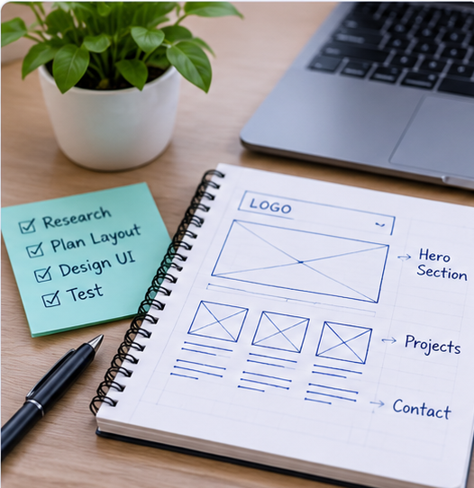

Research · UX planning
Website analysis and planning
Analysed a Cloud and DevOps portfolio to understand its audience, visual language, content structure and usability. Turned the findings into a persona, sitemap, wireframes and a design direction for my own portfolio.